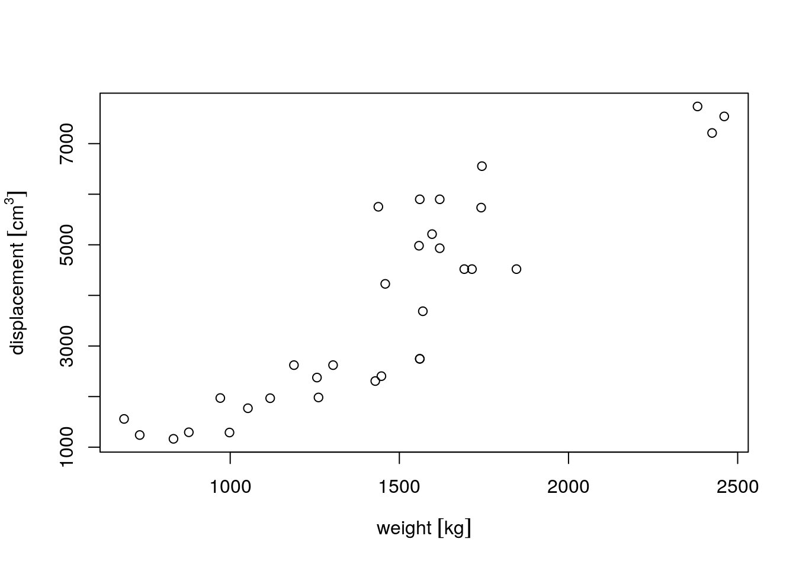
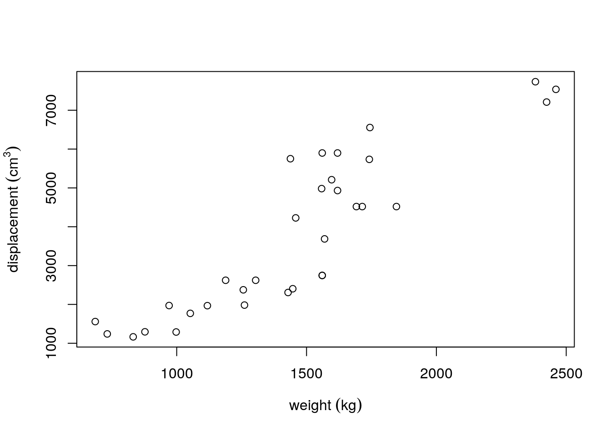

R has little support for physical measurement units. The exception is formed by time differences: time differences objects of class difftime have a units attribute that can be modified:
t1 = Sys.time()
t2 = t1 + 3600
d = t2 - t1
class(d)
## [1] "difftime"
units(d)
## [1] "hours"
d
## Time difference of 1 hours
units(d) = "secs"
d
## Time difference of 3600 secsWe see here that the units method is used to retrieve and modify the unit of time differences.
The units package generalizes this idea to other physical units, building upon the udunits2 R package, which in turn is build upon the udunits2 C library. The udunits2 library provides the following operations:
- validating whether an expression, such as
m/sis a valid physical unit - verifying whether two units such as
m/sandkm/hare convertible - converting values between two convertible units
- providing names and symbols for specific units
- handle different character encodings (utf8, ascii, iso-8859-1 and latin1)
The units R package uses R package udunits2 to extend R with functionality for manipulating numeric vectors that have physical measurement units associated with them, in a similar way as difftime objects behave.
Setting units, unit conversion
Existing units are resolved from a database in the units package, called ud_units. We can see the first three elements of it by
library(units)
## udunits system database from /usr/share/udunits
ud_units[1:3]
## $m
## 1 [m]
##
## $kg
## 1 [kg]
##
## $s
## 1 [s]We can set units to numerical values by set_units:
(a <- set_units(runif(10), m/s))
## Units: [m/s]
## [1] 0.8513723 0.3836295 0.3818109 0.2357424 0.6766007 0.3711916 0.5932052
## [8] 0.8195530 0.5079206 0.5958190the result, e.g.
literally means “10 times 1 m divided by 1 s”. In writing, the “1” values are omitted, and the multiplication is implicit.
The units package comes with a list of over 3000 predefined units,
We can retrieve a single unit from the ud_units database by
Basic manipulations
Arithmetic operations
Arithmetic operations verify units, and create new ones
a + a
## Units: [m/s]
## [1] 1.7027446 0.7672591 0.7636218 0.4714849 1.3532014 0.7423832 1.1864105
## [8] 1.6391060 1.0158413 1.1916380
a * a
## Units: [m^2/s^2]
## [1] 0.72483482 0.14717163 0.14577956 0.05557449 0.45778852 0.13778319
## [7] 0.35189245 0.67166708 0.25798337 0.35500027
a ^ 2
## Units: [m^2/s^2]
## [1] 0.72483482 0.14717163 0.14577956 0.05557449 0.45778852 0.13778319
## [7] 0.35189245 0.67166708 0.25798337 0.35500027
a ** -2
## Units: [s^2/m^2]
## [1] 1.379625 6.794788 6.859672 17.993867 2.184415 7.257779 2.841777
## [8] 1.488833 3.876219 2.816899and convert to the units of the first argument if necessary:
a + b # m/s + km/h -> m/s
## Units: [m/s]
## [1] 1.7027446 0.7672591 0.7636218 0.4714849 1.3532014 0.7423832 1.1864105
## [8] 1.6391060 1.0158413 1.1916380Currently, powers are only supported for integer powers, so using a ** 2.5 would result in an error.
Unit simplification
There are some basic simplification of units:
t <- with(ud_units, s)
a * t
## Units: [m]
## [1] 0.8513723 0.3836295 0.3818109 0.2357424 0.6766007 0.3711916 0.5932052
## [8] 0.8195530 0.5079206 0.5958190which also work when units need to be converted before they can be simplified:
t <- with(ud_units, min)
a * t
## Units: [m]
## [1] 51.08234 23.01777 22.90865 14.14455 40.59604 22.27149 35.59231
## [8] 49.17318 30.47524 35.74914Simplification to unit-less values gives the “1” as unit:
m <- with(ud_units, m)
a * t / m
## Units: [1]
## [1] 51.08234 23.01777 22.90865 14.14455 40.59604 22.27149 35.59231
## [8] 49.17318 30.47524 35.74914Allowed operations that require convertible units are +, -, ==, !=, <, >, <=, >=. Operations that lead to new units are *, /, and the power operations ** and ^.
Mathematical functions
Mathematical operations allowed are: abs, sign, floor, ceiling, trunc, round, signif, log, cumsum, cummax, cummin.
signif(a ** 2 / 3, 3)
## Units: [m^2/s^2]
## [1] 0.2420 0.0491 0.0486 0.0185 0.1530 0.0459 0.1170 0.2240 0.0860 0.1180
cumsum(a)
## Units: [m/s]
## [1] 0.8513723 1.2350019 1.6168127 1.8525552 2.5291559 2.9003475 3.4935527
## [8] 4.3131057 4.8210263 5.4168453
log(a) # base defaults to exp(1)
## Units: [(ln(re 1 m.s-1))]
## [1] -0.1609057 -0.9580779 -0.9628298 -1.4450155 -0.3906740 -0.9910370
## [7] -0.5222148 -0.1989962 -0.6774301 -0.5178184
log(a, base = 10)
## Units: [(lg(re 1 m.s-1))]
## [1] -0.06988048 -0.41608796 -0.41815169 -0.62756225 -0.16966755
## [6] -0.43040188 -0.22679502 -0.08642297 -0.29420415 -0.22488566
log(a, base = 2)
## Units: [(lb(re 1 m.s-1))]
## [1] -0.2321379 -1.3822143 -1.3890698 -2.0847167 -0.5636234 -1.4297641
## [7] -0.7533968 -0.2870909 -0.9773250 -0.7470540Concatenation
c(a,a)
## Units: [m/s]
## [1] 0.8513723 0.3836295 0.3818109 0.2357424 0.6766007 0.3711916 0.5932052
## [8] 0.8195530 0.5079206 0.5958190 0.8513723 0.3836295 0.3818109 0.2357424
## [15] 0.6766007 0.3711916 0.5932052 0.8195530 0.5079206 0.5958190concatenation converts to the units of the first argument, if necessary:
c(a,b) # m/s, km/h -> m/s
## Units: [m/s]
## [1] 0.8513723 0.3836295 0.3818109 0.2357424 0.6766007 0.3711916 0.5932052
## [8] 0.8195530 0.5079206 0.5958190 0.8513723 0.3836295 0.3818109 0.2357424
## [15] 0.6766007 0.3711916 0.5932052 0.8195530 0.5079206 0.5958190
c(b,a) # km/h, m/s -> km/h
## Units: [km/h]
## [1] 3.0649403 1.3810664 1.3745192 0.8486727 2.4357626 1.3362897 2.1355389
## [8] 2.9503907 1.8285143 2.1449484 3.0649403 1.3810664 1.3745192 0.8486727
## [15] 2.4357626 1.3362897 2.1355389 2.9503907 1.8285143 2.1449484
units in matrix objects
set_units(matrix(1:4,2,2), m/s)
## Units: [m/s]
## [,1] [,2]
## [1,] 1 3
## [2,] 2 4
set_units(matrix(1:4,2,2), m/s * m/s)
## Units: [m^2/s^2]
## [,1] [,2]
## [1,] 1 3
## [2,] 2 4but
strips units.
units objects in data.frames
units in data.frame objects are printed, but do not appear in summary:.
set.seed(131)
d <- data.frame(x = runif(4),
y = set_units(runif(4), s),
z = set_units(1:4, m/s))
d
## x y z
## 1 0.2064370 0.8463468 [s] 1 [m/s]
## 2 0.1249422 0.5292048 [s] 2 [m/s]
## 3 0.2932732 0.5186254 [s] 3 [m/s]
## 4 0.3757797 0.2378545 [s] 4 [m/s]
summary(d)
## x y z
## Min. :0.1249 Min. :0.2379 Min. :1.00
## 1st Qu.:0.1861 1st Qu.:0.4484 1st Qu.:1.75
## Median :0.2499 Median :0.5239 Median :2.50
## Mean :0.2501 Mean :0.5330 Mean :2.50
## 3rd Qu.:0.3139 3rd Qu.:0.6085 3rd Qu.:3.25
## Max. :0.3758 Max. :0.8463 Max. :4.00
d$yz = with(d, y * z)
d
## x y z yz
## 1 0.2064370 0.8463468 [s] 1 [m/s] 0.8463468 [m]
## 2 0.1249422 0.5292048 [s] 2 [m/s] 1.0584095 [m]
## 3 0.2932732 0.5186254 [s] 3 [m/s] 1.5558761 [m]
## 4 0.3757797 0.2378545 [s] 4 [m/s] 0.9514180 [m]
d[1, "yz"]
## 0.8463468 [m]formatting
Units are often written in the form m2 s-1, for square meter per second. This can be defined as unit, and also parsed by as_units:
udunits understands such string, and can convert them
Printing units in this form is done by
plotting
Base scatter plots and histograms support automatic unit placement in axis labels. In the following example we first convert to SI units. (Unit in needs a bit special treatment, because in is a reserved word in R.)
mar = par("mar") + c(0, .3, 0, 0)
displacement = mtcars$disp * ud_units[["in"]]^3
units(displacement) = with(ud_units, cm^3)
weight = mtcars$wt * 1000 * with(ud_units, lb)
units(weight) = with(ud_units, kg)
par(mar = mar)
plot(weight, displacement)
We can change grouping symbols from [ ] into ( ):
units_options(group = c("(", ")") ) # parenthesis instead of square brackets
par(mar = mar)
plot(weight, displacement)
We can also remove grouping symbols, increase space between variable name and unit by:
units_options(sep = c("~~~", "~"), group = c("", "")) # no brackets; extra space
par(mar = mar)
plot(weight, displacement)
More complex units can be plotted either with negative powers, or as divisions, by modifying one of units’s global options using units_options:
gallon = as_units("gallon")
consumption = mtcars$mpg * with(ud_units, mi/gallon)
units(consumption) = with(ud_units, km/l)
par(mar = mar)
plot(displacement, consumption) # division in consumption
units_options(negative_power = TRUE) # division becomes ^-1
plot(displacement, consumption) # division in consumptionAs usual, units modify automatically in expressions:
units_options(negative_power = TRUE) # division becomes ^-1
par(mar = mar)
plot(displacement, consumption)